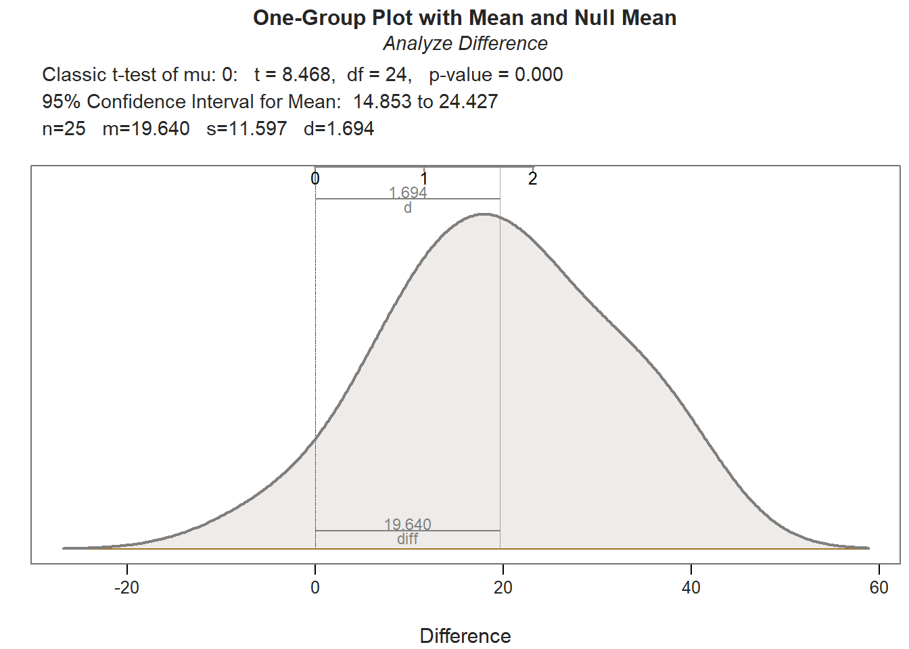
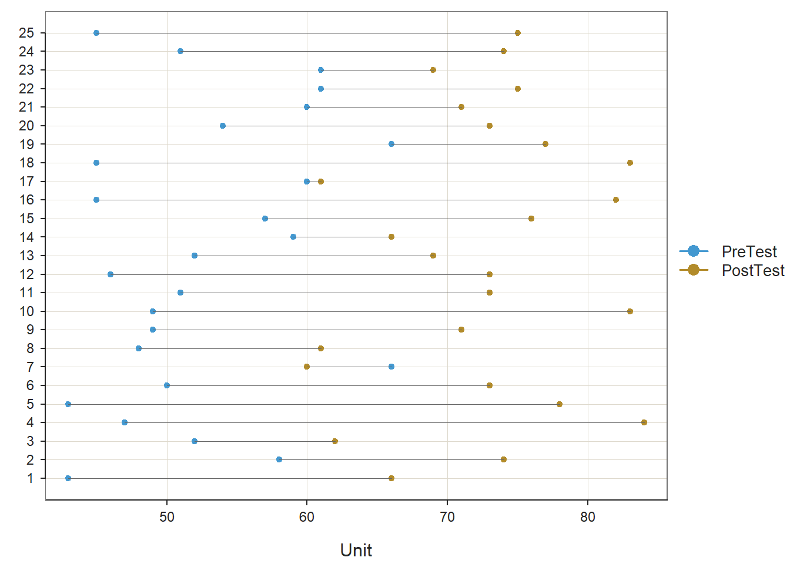
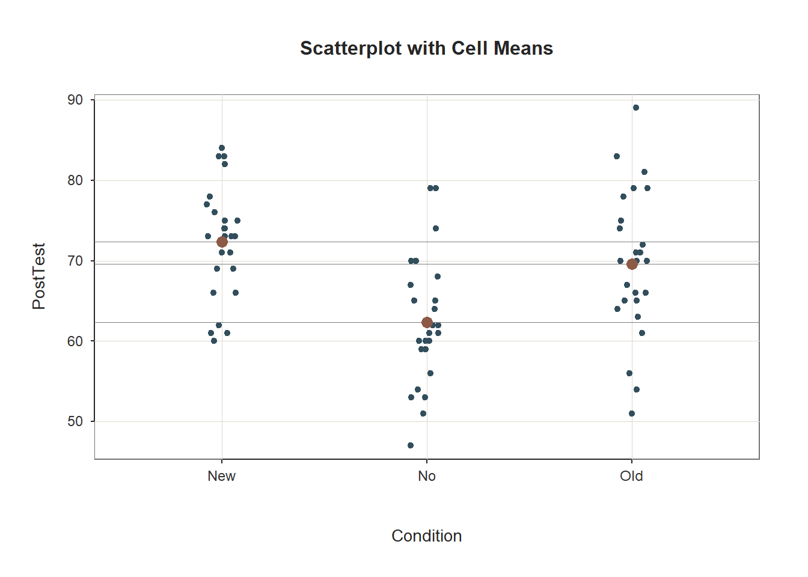
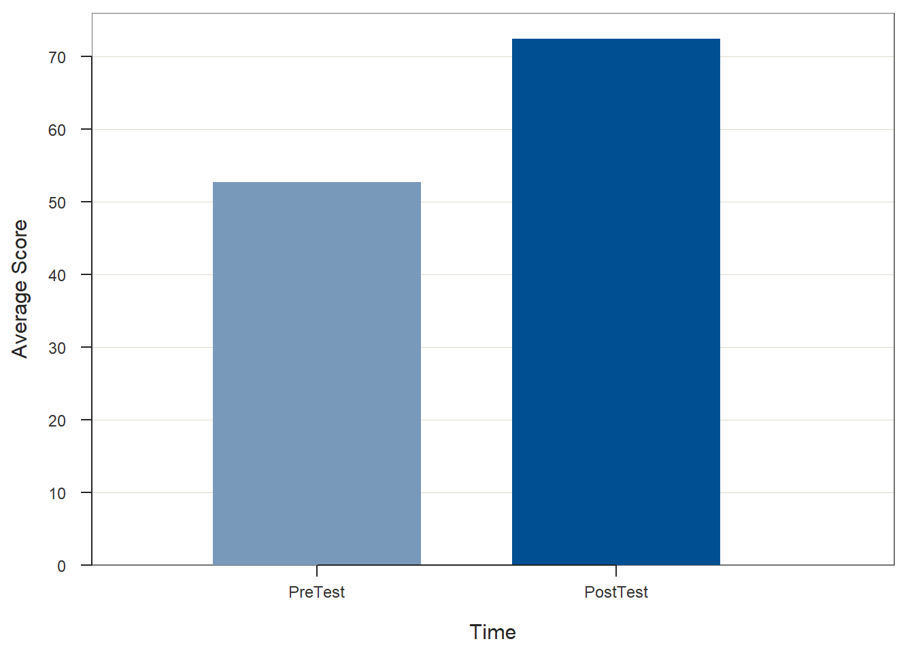
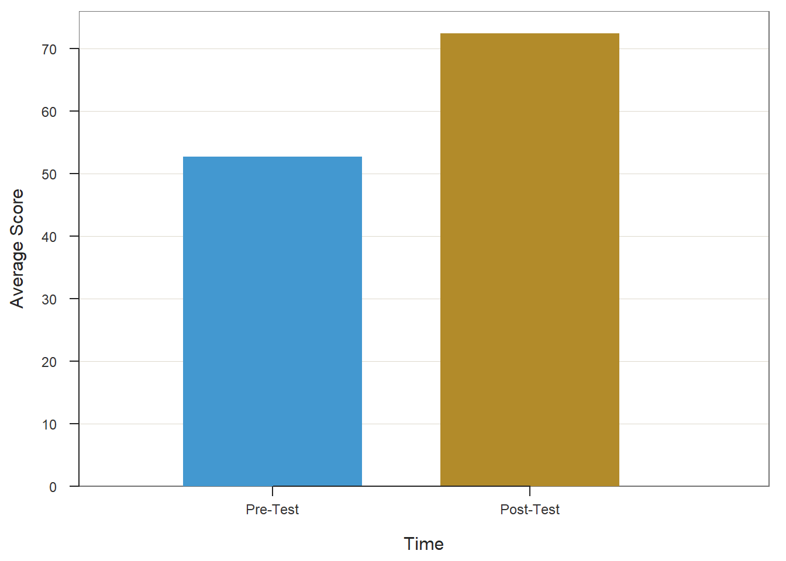

Chapter 32 Evaluating a Pre-Test/Post-Test without Control Group Design Using Paired-Samples t-test
In this chapter, we will learn about the post-test/pre-test without control group training evaluation design and how a paired-samples t-test can be used to analyze the data acquired from this design. We’ll begin with conceptual overviews of this particular training evaluation design and of the paired-samples t-test, and then we’ll conclude with a tutorial.
32.1 Conceptual Overview
In this section, we’ll begin by describing the post-test/pre-test without control group training evaluation design, and we’ll conclude by reviewing the paired-samples t-test, with discussions of statistical assumptions, statistical significance, and practical significance; the section wraps up with a sample-write up of a paired-samples t-test used to evaluate data from a post-test/pre-test without control group training evaluation design.
32.1.1 Review of Pre-Test/Post-Test without Control Group Design
In a pre-test/post-test without control group training evaluation design (i.e., research design), all employees participate in the same training program, and there is no random assignment and no control group. This design can best be described as pre-experimental. A paired-samples t-test can be used to analyze the data from a pre-test/post-test without control group design, provided the statistical assumptions are satisfied.
Like any evaluation design, there are limitations to the inferences and conclusions we can draw from a pre-test/post-test without control group design. As a strength, this design includes a pre-test, which assesses initial performance on the focal outcome measure. The pre-test serves as a baseline and gives us information about where the employees started with respect to outcome measure prior to completing the training. Further, the addition of a pre-test allows us to assess whether employees’ scores on the outcome measure have changed from before to after training. As a major weakness, this design lacks a control group and, moreover, random assignment to treatment and control groups; for these reasons, this design is not considered (quasi-)experimental. The lack of a control group (i.e., comparison group), means that we are unable to compare if the direction and amount of any observed change from pre-test to post-test differs from a group that did not receive the program training program. Consequently, this design doesn’t give us much confidence that any change we observe was due to the training itself – as opposed to natural maturation and developmental processes or other confounding factors. In other words, this design doesn’t given us much confidence that the training “caused” any change we observe from pre-test to post-test.
32.1.2 Review of Paired-Samples t-test
Link to conceptual video: https://youtu.be/o_F3Y0A2q3Q
The paired-samples t-test is an inferential statistical analysis that can be used to compare the to compare the mean of the differences between two sets of dependent scores to some population mean; in the context of training evaluation, the population mean is typically set to zero. That is, this analysis helps us understand whether one sample of cases shows evidence of change or difference between two dependent sets of scores. Often dependence refers to the fact that the two sets of scores (through which a difference score is calculated) come from the same group of individuals who were measured (assessed) twice over time (e.g., time 1 assessment and time 2 assessment for same employees), twice using the same scale associated with different foci (e.g., ratings of supervisor satisfaction and coworker satisfaction from same employees), or twice using the same scale evaluating a common target but associated with two different raters/sources (e.g., employee self-ratings of performance and supervisor-ratings of employee performance). The paired-samples t-test is sometimes called a dependent-samples t-test, a repeated-measures t-test, or a Student’s t-test.
The formula for a paired-samples t-test can be written as follows:
\(t = \frac{\overline{X}_D - \mu_0}{\frac{s_D}{\sqrt{n}}}\)
where \(\overline{X}_D\) is the mean of the differences between the two sets of dependent scores, \(\mu_0\) is the zero or non-zero population mean to which \(\overline{X}_D\) is compared, \(s_D\) is the standard deviation of the differences between the dependent scores, and \(n\) refers to the number of cases (i.e., sample size).
32.1.2.1 Statistical Assumptions
The statistical assumptions that should be met prior to running and/or interpreting estimates from a paired-samples t-test include:
- The difference scores based on the two outcome measures (e.g., pre-test, post-test) are independent of each other, suggesting that cases (employees) are randomly sampled from the underlying population;
- The difference scores have a univariate normal distribution in the underlying population.
32.1.2.2 Statistical Significance
If we wish to know whether the mean of the differences differs from the population mean to a statistically significant extent, we can compare our t-value value to a table of critical values of a t-distribution. If our calculated value is larger than the critical value given the number of degrees of freedom (df = n - 2) and the desired alpha level (i.e., significance level, p-value threshold), we would conclude that there is evidence that the mean of the differences differs to a statistically significant extent from the population mean (e.g., zero). Alternatively, we can calculate the exact p-value if we know the t-value and the degrees of freedom. Fortunately, modern statistical software calculates the t-value, degrees of freedom, and p-value for us.
Using null hypothesis significance testing (NHST), we interpret a p-value that is less than .05 (or whatever two- or one-tailed alpha level we set) to meet the standard for statistical significance, meaning that we reject the null hypothesis that the mean of the differences between the two sets of dependent scores is equal to the population mean; as noted above, in the training evaluation context, the population mean is often set to zero. In other words, if the p-value is less than .05, we conclude that the mean of the differences differs from zero to a statistically significant extent. In contrast, if the p-value is equal to or greater than .05, then we fail to reject the null hypothesis that the mean of the differences is equal to zero. Put differently, if the p-value is equal to or greater than .05, we conclude that the mean of the differences does not differ from zero to a statistically significant extent, leading us to conclude that there is no change/difference between the two sets of dependent scores in the population.
When setting an alpha threshold, such as the conventional two-tailed .05 level, sometimes the question comes up regarding whether borderline p-values signify significance or nonsignificance. For our purposes, let’s be very strict in our application of the chosen alpha level. For example, if we set our alpha level at .05, p = .049 would be considered statistically significant, and p = .050 would be considered statistically nonsignificant.
Because our paired-samples t-test is estimated using data from a sample drawn from an underlying population, sampling error will affect the extent to which our sample is representative of the population from which its drawn. That is, the observed mean of the differences is a point estimate of the population parameter and is subject to sampling error. Fortunately, confidence intervals can give us a better idea of what the true population parameter value might be. If we apply an alpha level of .05 (two-tailed), then the equivalent confidence interval (CI) is a 95% CI. In terms of whether the difference between two means is is statistically significant, if the lower and upper limits of 95% CI do not include zero, then this tells us the same thing as a p-value that is less than .05. Strictly speaking, a 95% CI indicates that if we were to hypothetically draw many more samples from the underlying populations and construct CIs for each of those samples, then the true parameter (i.e., true value of the mean of the differences in the population) would likely fall within the lower and upper bounds of 95% of the estimated CIs. In other words, the 95% CI gives us an indication of plausible values for the population parameter while taking into consideration sampling error. A wide CI (i.e., large difference between the lower and upper limits) signifies more sampling error, and a narrow CI signifies less sampling error.
32.1.2.3 Practical Significance
A significant paired-samples t-test and associated p-value only tells us that the mean of the differences is statistically different from zero. It does not, however, tell us about the magnitude of the mean of the differences – or in other words, the practical significance. The standardized mean difference score (Cohen’s d) is an effect size, which means that it is a standardized metric that can be used to compare d-values compare samples. In essence, the Cohen’s d indicates the magnitude of the mean of the differences in standard deviation units. A d-value of .00 would indicate that the mean of the differences is equal to zero, while the following are some generally accepted qualitative-magnitude labels we can attach to the absolute value of d.
| Cohen’s d | Description |
|---|---|
| .20 | Small |
| .50 | Medium |
| .80 | Large |
Here is the formula for computing d:
\(d = \frac{\overline{X}_D} {s_D}\)
where \(\overline{X}_D\) is the mean of the differences between the two sets of dependent scores, and \(s_D\) is the standard deviation of the differences between the dependent scores.
32.1.2.4 Sample Write-Up
Example 1: The same groups of employees was assessed on the exact same knowledge test before and after completing the same training program; in other words, the employees took part in a pre-test/post-test without control group training evaluation design. Because each employee has two scores on the same test (corresponding to the pre-test and post-test), a paired-samples t-test is an appropriate inferential statistical analysis for determining whether the mean of the differences between the sets of pre-test and post-test scores differs from zero. More specifically, a paired-samples t-test was used to determine whether there were significant changes within participants in terms of their average test scores from before participating in the training program to after participating. The mean of the differences (i.e., before-training scores subtracted from after-training scores) for 25 participants was 19.64 (SD = 11.60), and possible test scores could range from 1 to 100 points, and the paired-samples t-test indicated that this mean of the differences is significantly greater than zero (t = 8.47, p < .01, 95% CI[14.85, 24.43]) and is large in magnitude (d = 1.69). In sum, knowledge test scores were found to increase to a significantly significant and large extent from before to after completion of the training.
Example 2: A single sample of 30 employees was asked to rate their pay satisfaction and their supervisor satisfaction. Here, the same employees rated their satisfaction with two different targets: pay and supervisor. Because the same employees rated two different ratings targets, we can classify it as a repeated-measures design, which is amenable to analysis using a paired-samples t-test, assuming the requisite statistical assumptions are met. A paired-samples t-test is used to determine whether there the mean of the differences between employees pay satisfaction and supervisor satisfaction differs from zero, and we found that the mean of the differences (M = 2.70, SD = 13.20) did not differ significantly from zero (t = 1.12, p = .27, 95% CI[-2.23, 7.62]) based on this sample of 30 employees. Because we did not find evidence of statistical significance, we assume that, statistically, the mean of the differences does not differ from zero, and thus we will not interpret the level of practical significance (i.e., effect size).
32.2 Tutorial
This chapter’s tutorial demonstrates how to estimate a paired-samples t-test, test the associated statistical assumptions, and present the findings in writing and visually.
32.2.1 Video Tutorial
As usual, you have the choice to follow along with the written tutorial in this chapter or to watch the video tutorial below.
Link to video tutorial: https://youtu.be/ZMc9IBFdGsw
32.2.2 Functions & Packages Introduced
| Function | Package |
|---|---|
ttest |
lessR |
c |
base R |
mean |
base R |
data.frame |
base R |
remove |
base R |
BarChart |
lessR |
pivot_longer |
tidyr |
factor |
base R |
32.2.3 Initial Steps
If you haven’t already, save the file called “TrainingEvaluation_PrePostOnly.csv” into a folder that you will subsequently set as your working directory. Your working directory will likely be different than the one shown below (i.e., "H:/RWorkshop"). As a reminder, you can access all of the data files referenced in this book by downloading them as a compressed (zipped) folder from the my GitHub site: https://github.com/davidcaughlin/R-Tutorial-Data-Files; once you’ve followed the link to GitHub, just click “Code” (or “Download”) followed by “Download ZIP”, which will download all of the data files referenced in this book. For the sake of parsimony, I recommend downloading all of the data files into the same folder on your computer, which will allow you to set that same folder as your working directory for each of the chapters in this book.
Next, using the setwd function, set your working directory to the folder in which you saved the data file for this chapter. Alternatively, you can manually set your working directory folder in your drop-down menus by going to Session > Set Working Directory > Choose Directory…. Be sure to create a new R script file (.R) or update an existing R script file so that you can save your script and annotations. If you need refreshers on how to set your working directory and how to create and save an R script, please refer to Setting a Working Directory and Creating & Saving an R Script.
# Set your working directory
setwd("H:/RWorkshop")Next, read in the .csv data file called “TrainingEvaluation_PrePostOnly.csv” using your choice of read function. In this example, I use the read_csv function from the readr package (Wickham, Hester, and Bryan 2023). If you choose to use the read_csv function, be sure that you have installed and accessed the readr package using the install.packages and library functions. Note: You don’t need to install a package every time you wish to access it; in general, I would recommend updating a package installation once ever 1-3 months. For refreshers on installing packages and reading data into R, please refer to Packages and Reading Data into R.
# Install readr package if you haven't already
# [Note: You don't need to install a package every
# time you wish to access it]
install.packages("readr")# Access readr package
library(readr)
# Read data and name data frame (tibble) object
td <- read_csv("TrainingEvaluation_PrePostOnly.csv")## Rows: 25 Columns: 3
## ── Column specification ─────────────────────────────────────────────────────────────────────────────────────────────────────────
## Delimiter: ","
## dbl (3): EmpID, PreTest, PostTest
##
## ℹ Use `spec()` to retrieve the full column specification for this data.
## ℹ Specify the column types or set `show_col_types = FALSE` to quiet this message.# Print the names of the variables in the data frame (tibble) objects
names(td)## [1] "EmpID" "PreTest" "PostTest"# View variable type for each variable in data frame
str(td)## spc_tbl_ [25 × 3] (S3: spec_tbl_df/tbl_df/tbl/data.frame)
## $ EmpID : num [1:25] 26 27 28 29 30 31 32 33 34 35 ...
## $ PreTest : num [1:25] 43 58 52 47 43 50 66 48 49 49 ...
## $ PostTest: num [1:25] 66 74 62 84 78 73 60 61 71 83 ...
## - attr(*, "spec")=
## .. cols(
## .. EmpID = col_double(),
## .. PreTest = col_double(),
## .. PostTest = col_double()
## .. )
## - attr(*, "problems")=<externalptr># View first 6 rows of data frame
head(td)## # A tibble: 6 × 3
## EmpID PreTest PostTest
## <dbl> <dbl> <dbl>
## 1 26 43 66
## 2 27 58 74
## 3 28 52 62
## 4 29 47 84
## 5 30 43 78
## 6 31 50 73There are 25 cases (i.e., employees) and 3 variables in the td data frame: EmpID (unique identifier for employees), PreTest (pre-training scores on training assessment, ranging from 1-100, where higher scores indicate higher performance), and PostTest (post-training scores on training assessment, ranging from 1-100, where higher scores indicate higher performance).
32.2.4 Estimate Paired-Samples t-test
In this chapter, we will review how to estimate a paired-samples t-test using the ttest function from the lessR package (Gerbing, Business, and University 2021). Using this function, we will evaluate whether the mean of the differences between the pre-test (PreTest) and post-test (PostTest) outcome variables differs significantly from zero. In other words, let’s find out if assessment scores increased, stayed the same, or decreased from before to after the employees participated in training.
Prior to running the paired-samples t-test, we’ll have to assume (because we don’t have access to information that would indicate otherwise) that the data meet the statistical assumption that the difference scores based on the two outcome measures (e.g., pre-test, post-test) are independent of each other (i.e., randomly sampled from the underlying population).
To access and use the ttest function, we need to install and/or access the lessR package. If you haven’t already, be sure to install the lessR package; if you’ve recently installed the package, then you likely don’t need to install it in this session, and you can skip that step to save time. You will need to run the library function to access the package (assuming it’s been installed), so don’t forget that important step.
# Install lessR package
install.packages("lessR")# Access lessR package and its functions
library(lessR)Please note that when you use the library function to access the lessR package in a new R or RStudio session, you will likely receive a message in red font in your Console. Typically, red font in your Console is not a good sign; however, accessing the lessR package is one of the unique situations in which a red-font message is not a warning or error message. You may also receive a warning message that indicates that certain “objects are masked.” For our purposes, we can ignore that message.
The ttest function from the lessR package makes running a paired-samples t-test relatively straightforward, as wrapped up in the function are tests of the second statistical assumption (see Statistical Assumptions section).
Now we’re ready to run a paired-samples t-test. To begin, type the name of the ttest function. As the first argument in the parentheses, specify the name of the first outcome variable (PreTest). As the second argument, specify the name of the second outcome variable (PostTest). Difference scores will be calculated as part of the function by subtracting the variable in the first argument from the variable in the second argument. For the third argument, use data= to specify the name of the data frame (td) where the outcome and predictor variables are located. For the fourth argument, enter paired=TRUE to inform R that the data are paired and, thus, you are requesting a paired-samples t-test.
# Paired-samples t-test using ttest function from lessR
ttest(PreTest, PostTest, data=td, paired=TRUE)##
##
## ------ Describe ------
##
## Difference: n.miss = 0, n = 25, mean = 19.640, sd = 11.597
##
##
## ------ Normality Assumption ------
##
## Null hypothesis is a normal distribution of Difference.
## Shapiro-Wilk normality test: W = 0.9687, p-value = 0.613
##
##
## ------ Infer ------
##
## t-cutoff for 95% range of variation: tcut = 2.064
## Standard Error of Mean: SE = 2.319
##
## Hypothesized Value H0: mu = 0
## Hypothesis Test of Mean: t-value = 8.468, df = 24, p-value = 0.000
##
## Margin of Error for 95% Confidence Level: 4.787
## 95% Confidence Interval for Mean: 14.853 to 24.427
##
##
## ------ Effect Size ------
##
## Distance of sample mean from hypothesized: 19.640
## Standardized Distance, Cohen's d: 1.694
##
##
## ------ Graphics Smoothing Parameter ------
##
## Density bandwidth for 6.941
As you can see in the output, the ttest function provides descriptive statistics, assumption tests regarding the distribution of the difference scores, a statistical significance test of the mean comparison, and an indicator of practical significance in the form of the standardized mean difference (Cohen’s d). In addition, the default lollipop data visualization depicts the distance from the PreTest score to the PostTest score for each case, and the default density distribution depicts the shape of the difference-score distribution, and the extent to which the mean of this distribution appears (visually) to differ from zero.
Description: The Description section includes basic descriptive statistics about the sample. In the output, we can see that that there are 25 employees (n = 25), and descriptively, the mean of the differences (PostTest minus PreTest) is 19.64 (SD = 11.60), which indicates that, on average, scores increased from before to after training (although we will not know if this difference is statistically significant until we get to the Inference section of the output).
Normality Assumption: If the sample size is less than or equal to 30, then the Shapiro-Wilk normality test is used to test the null hypothesis that the distribution of the difference scores demonstrates univariate normality; as such, if the p-values associated with the test statistic (W) is less than the conventional alpha level of .05, then we would reject the null hypothesis and assume that the distribution is not normal. If, however, we fail to reject the null hypothesis, then we don’t have statistical evidence that the distribution is anything other than normal; in other words, if the p-value is equal to or greater than our alpha level (.05), then we can assume the variable is likely normally distributed. In the output, we can see that the difference is normally distributed (W = .969, p = .613).
Inference: In the Inference section of the output, you will find the statistical test of the null hypothesis (e.g., mean of the differences is equal to zero). First, take a look at the line prefaced with Hypothesis Test of Mean, as this line contains the results of the paired-samples t-test (t = 8.468, p < .001). Because the p-value is less than our conventional two-tailed alpha cutoff of .05, we reject the null hypothesis and conclude that the mean of the differences differs from zero to a statistically significant extent. But in what direction? To answer this question, we need to look back to the Description section; in that section, the mean of the differences (PostTest minus PreTest) is 19.64; as such, we can conclude the following: On average, employees’ performed’ performance on the assessment increased after completing training (M = 19.64, SD = 11.60, t = 8.468, p < .001). Regarding the 95% confidence interval, we can conclude that the true mean of the differences in the population is likely between 14.85 and 24.43 (on a 1-100 point assessment).
Effect Size: In the Effect Size section, the standardized mean difference (Cohen’s d) is provided as an indicator of practical significance. In the output, d is equal to 1.69, which is considered to be a (very) large effect, according to conventional rules-of-thumb (see table below). Please note that typically we only interpret practical significance when the mean of the differences has been found to be statistically significant.
| Cohen’s d | Description |
|---|---|
| .20 | Small |
| .50 | Medium |
| .80 | Large |
Sample Write-Up: In total, 25 employees participated in the new training program, which was evaluated using a pre-test/post-test without control group training evaluation design. Employees completed an assessment of their knowledge before training and after training, where assessment scores could range from 1-100. On average, employees’ performance on the assessment increased to a statistically significant extent from before to after completing the training (M = 19.64, SD = 11.60, t = 8.468, p < .001, 95% CI[14.85, 24.43]). This improvement can be considered very large (d = 1.69).
32.2.5 Visualize Results Using Bar Chart
When we find a statistically significant difference between the mean of the differences, we may decide to create a bar chart in which the mean of the first outcome variable (PreTest) and the mean of the second outcome variable (PostTest) are displayed as separate bars. We will use the BarChart function from lessR to do so. Before doing so, however, we must prep (i.e., restructure, manipulate) the data to meet the needs of the BarChart function. I will show you two approaches for prepping the data. The first approach requires the installation of the tidyr package (from the tidyverse universe of packages), and the second uses only functions from base R. In my opinion, the logic needed to apply the first approach is more straightforward; however, if you don’t find that to be the case, then by all means try out the second approach.
32.2.5.1 First Approach
For the first approach to prepping the data and generating a bar chart, we will use the pivot_longer function from the tidyr package, which means that we need to install and/or access the tidyr package. If you’d like additional information on the restructuring data frames using the pivot_longer function, please check out the chapter on manipulating and restructuring data.
If you haven’t already, be sure to install the lessR package; if you’ve recently installed the package, then you likely don’t need to install it in this session, and you can skip that step to save time. You will need to run the library function to access the package (assuming it’s been installed), so don’t forget that important step. [Note: If you run into any installation errors, try installing and access the tidyverse “grand” package, which subsumes the tidyr package, along with many others.]
# Install tidyr package
install.packages("tidyr")# Access tidyr package and its functions
library(tidyr)Next, let’s use the pivot_longer function from the tidyr package to “pivot” (i.e., manipulate, restructure) our data into “long format”, where “long format” is sometimes referred to as “stacked format”.
- As the first step, create a unique name for an object that we can subsequently assign the manipulated data frame object to. Here, I call the new data frame object
td_longto indicate that the new data frame object is in long format. - Insert the
<-operator to the right of the new data frame object name. This operator will assign the manipulated data frame object to the new object we’ve named. - Type the name of the
pivot_longerfunction.- As the first argument, type
data=followed by the exact name of the original data frame object we were working with (td). This will tell the function which data frame object we wish to manipulate. - As the second argument, type the
cols=argument to specify a vector of two or more variables we wish to pivot from wide format (i.e., separate columns) to long format (i.e., a single column). Our goal here is to “stack” thePreTestandPostTestvariable names as categories (i.e., levels) within a new variable that we will subsequently create. Thus, we will type the name of thec(combine) function from base R, and as the two arguments, we will list the names of thePreTestandPostTestvariables. - As the third argument, type the
names_to=argument followed by the name of the new “stacked” variable with categorical labels that we’d like to create; make sure the name of the new variable is within quotation marks (" "). This is the variable that will contain the categories (i.e., levels) that were thePreTestandPostTestvariable names from the originaltddata frame object. Here, I name this new variable"Test". - As the fourth argument, type the
values_to=argument followed by the name of a new variable containing the test scores that were originally nested within thePreTestandPostTestvariable names from the originaltddata frame object; make sure the name of the new variable is within quotation marks (" "). Here, I name this new variable"Score".
- As the first argument, type
# Manipulate data from wide to long format (i.e., stack)
td_long <- pivot_longer(data=td,
cols=c(PreTest,PostTest),
names_to="Test",
values_to="Score")Let’s take a peek at our new td_long data frame object by using the Print function.
# Print new data frame object to Console
print(td_long)## # A tibble: 50 × 3
## EmpID Test Score
## <dbl> <chr> <dbl>
## 1 26 PreTest 43
## 2 26 PostTest 66
## 3 27 PreTest 58
## 4 27 PostTest 74
## 5 28 PreTest 52
## 6 28 PostTest 62
## 7 29 PreTest 47
## 8 29 PostTest 84
## 9 30 PreTest 43
## 10 30 PostTest 78
## # ℹ 40 more rowsAs you can see, each observation (i.e., employee) now has two rows of data (as opposed to one), such that they have a row for PreTest scores and PostTest scores. These data are now in long (i.e., stacked) format.
By default, the PreTest and PostTest levels of the Test variable we created will be in alphabetical order, such that PostTest will come before PreTest if we created any data visualizations or go to analyze the data from this variable. Intuitively, this is not the order we want, as temporally PreTest should precede (i.e., come before) PostTest. Fortunately, we can use the factor function from base R to convert the Test variable to an ordered factor.
- Let’s overwrite the existing
Testvariable from thetd_longdata frame object by typing the name of the data frame object (td_long) followed by the$operator and the name of the variable (Test). - To the right of
td_long$Test, type the<-operator so that we can assign the new ordered factored variable to the existing variable calledTestfrom thetd_longdata frame object. - To the right of the
<-operator, type the name of thefactorfunction.- As the first argument, type the name of the data frame object (
td_long) followed by the$operator and the name of the variable (Test). - As the second argument, type
ordered=TRUEto signify that this variable will have ordered levels. - As the third argument, type
levels=followed by a vector of the variable levels (i.e., categories) in ascending order. Note that we use thec(combine) function from base R to construct the vector, and we need to put each level within quotation marks (" "). Here, we wish to order the levels such thatPreTestcomes beforePostTest, so we insert the following:c("PreTest","PostTest").
- As the first argument, type the name of the data frame object (
# Re-order the Test variable so that PreTest comes first
td_long$Test <- factor(td_long$Test,
ordered=TRUE,
levels=c("PreTest","PostTest"))We are now ready to create our bar chart of the average scores on the pre-test and the post-test from our pre-test/post-test without control group evaluation design.
- Begin by typing the name of the
BarChartfunction from thelessRpackage; if you haven’t already, be sure that you have recently installed thelessRpackage and that you have accessed the package in your current R session. See above for more details on how to install and access thelessRpackage. - As the first argument, type
x=followed by the name of the categorical (i.e., nominal, ordinal) variable that contains the names of the different test times. In this example, the name of the variable isTest, and it contains the levels (i.e., categories)PreTestandPostTest. - As the second argument, type
y=followed by the name of the variable that contains the scores for the different test administration times. In this example, the name of the variable isScore, and it contains the numeric scores on thePreTestandPostTestfor each employee (i.e., observation). - As the third argument, type
data=followed by the exact name of the data frame object to which the variables specified in the two previous arguments belong. In this example, the name of the data frame object istd_long. - As the fourth argument, type
stat="mean"to indicate that we wish for theBarChartfunction to compute the average (i.e., mean) score from theScorevariable for each level of theTestvariable.
# Create bar chart
BarChart(x=Test, y=Score, data=td_long, stat="mean")## Score
## - by levels of -
## Test
##
## n miss mean sd min mdn max
## PreTest 25 0 52.72 7.05 43.00 51.00 66.00
## PostTest 25 0 72.36 6.98 60.00 73.00 84.00
## >>> Suggestions
## Plot(Score, Test) # lollipop plot
##
## Plotted Values
## --------------
## PreTest PostTest
## 52.720 72.360If you wish, you can then add additional arguments like xlab= and ylab= to re-label the x- and y-axes, respectively.
# Create bar chart
BarChart(x=Test, y=Score, data=td_long, stat="mean",
xlab="Time",
ylab="Average Score")## Score
## - by levels of -
## Test
##
## n miss mean sd min mdn max
## PreTest 25 0 52.72 7.05 43.00 51.00 66.00
## PostTest 25 0 72.36 6.98 60.00 73.00 84.00
## >>> Suggestions
## Plot(Score, Test) # lollipop plot
##
## Plotted Values
## --------------
## PreTest PostTest
## 52.720 72.36032.2.5.2 Second Approach
For the second approach, we will create a data frame of the means and their names so that we can use the data frame as input into the BarChart function.
- Come up with a unique name for a vector of means that we will create; here, I name the vector
prepost_means. - Type the
<-operator to the right of the vector name (prepost_means) so that we can assign the vector we create to the right of the<-operator to the new object. - Second, type the name of the
cfunction from base R.- As the first argument within the
cfunction, type the name of themeanfunction from base R, and within that function’s parentheses, type the name of the data frame (td), followed by the$symbol and the name of the first outcome variable (PreTest). As the second argument within themeanfunction, typena.rm=TRUEin case there are missing data. - As the second argument within the
cfunction, type the name of themeanfunction from base R, and within that function’s parentheses, type the name of the data frame (td), followed by the$symbol and the name of the second outcome variable (PostTest); as the second argument within themeanfunction, typena.rm=TRUEin case there are missing data.
- As the first argument within the
# Create vector of means for first and second outcome variables
prepost_means <- c(mean(td$PreTest, na.rm=TRUE), mean(td$PostTest, na.rm=TRUE))Now it’s time to create a vector of the names (i.e., variable names) that correspond with the means contained within the vector we just created. First, come up with a name for the vector object that will contain the names; here, I name the vector meannames using the <- operator. Second, type the name of the c function from base R. As the first argument within the function, type what you wish to name the first mean (i.e., variable name for the first value), and put it in quotation marks ("Pre-Test"). As the second argument within the function, type what you wish to name the second mean (i.e., variable name for the second value), and put it in quotation marks ("Post-Test").
# Create vector of names corresponding to the first and second means above
meannames <- c("Pre-Test","Post-Test")To combine these two vectors into a data frame, we will use the data.frame function from base R. First, come up with a name for the data frame object; here, I name the data frame meansdf using the <- naming symbol. Second, type the name of the data.frame function. As the first argument, type the name of meannames vector we created. As the second argument, type the name of the prepost_means vector we created.
# Create data frame from the two vectors created above
meansdf <- data.frame(meannames, prepost_means)Remove the vectors called meannames and prepost_means from your R Global environment to avoid any confusion when specifying the BarChart function. Use the remove function from base R to accomplish this.
# Remove the two vectors created above from R Global Environment
remove(prepost_means)
remove(meannames)Now have data in a format that can be used as input in the BarChart function from the lessR package. Begin by typing the name of the BarChart function. As the first argument, type the name of the variable that contains the names of the means (meannames). As the second argument, type the name of the variable that contains the actual means (prepost_means). As the third argument, type data= followed by the name of the data frame to which the aforementioned variables belong (meansdf). As the fourth argument, use xlab= to provide the x-axis label ("Time"). As the fifth argument, use ylab= to provide the y-axis label ("Average Score").
# Create bar chart
BarChart(meannames, prepost_means, data=meansdf,
xlab="Time",
ylab="Average Score")
## >>> Suggestions
## Plot(prepost_means, meannames) # lollipop plot
##
## Plotted Values
## --------------
## Pre-Test Post-Test
## 52.720 72.36032.2.6 Summary
In this chapter, we learned how to estimate a paired-samples t-test to determine whether the mean of the differences between scores on two dependent variables is significantly different from zero. This analysis is useful when evaluating a pre-test/post-test without control group training design. The ttest function from lessRcan be used to run paired-samples t-tests. We also learned how to visualize the results using the BarChart function from lessR.
32.3 Chapter Supplement
In addition to the ttest function from the lessR package covered above, we can use the t.test function from base R to estimate a paired-samples t-test. Because this function comes from base R, we do not need to install and access an additional package.
32.3.1 Functions & Packages Introduced
| Function | Package |
|---|---|
shapiro.test |
base R |
t.test |
base R |
cohen.d |
effsize |
c |
base R |
mean |
base R |
32.3.2 Initial Steps
If required, please refer to the Initial Steps section from this chapter for more information on these initial steps.
# Set your working directory
setwd("H:/RWorkshop")# Install readr package if you haven't already
# [Note: You don't need to install a package every
# time you wish to access it]
install.packages("readr")# Access readr package
library(readr)
# Read data and name data frame (tibble) object
td <- read_csv("TrainingEvaluation_PrePostOnly.csv")## Rows: 25 Columns: 3
## ── Column specification ─────────────────────────────────────────────────────────────────────────────────────────────────────────
## Delimiter: ","
## dbl (3): EmpID, PreTest, PostTest
##
## ℹ Use `spec()` to retrieve the full column specification for this data.
## ℹ Specify the column types or set `show_col_types = FALSE` to quiet this message.# Print the names of the variables in the data frame (tibble) objects
names(td)## [1] "EmpID" "PreTest" "PostTest"# View variable type for each variable in data frame
str(td)## spc_tbl_ [25 × 3] (S3: spec_tbl_df/tbl_df/tbl/data.frame)
## $ EmpID : num [1:25] 26 27 28 29 30 31 32 33 34 35 ...
## $ PreTest : num [1:25] 43 58 52 47 43 50 66 48 49 49 ...
## $ PostTest: num [1:25] 66 74 62 84 78 73 60 61 71 83 ...
## - attr(*, "spec")=
## .. cols(
## .. EmpID = col_double(),
## .. PreTest = col_double(),
## .. PostTest = col_double()
## .. )
## - attr(*, "problems")=<externalptr># View first 6 rows of data frame
head(td)## # A tibble: 6 × 3
## EmpID PreTest PostTest
## <dbl> <dbl> <dbl>
## 1 26 43 66
## 2 27 58 74
## 3 28 52 62
## 4 29 47 84
## 5 30 43 78
## 6 31 50 7332.3.3 t.test Function from Base R
By itself, the t.test function from base R does not generate statistical assumption tests and and estimates of effect size (practical significance) like the ttest function from lessR does. Thus, we will need to apply additional functions to achieve all of the necessary output.
Before running our paired-samples t-test using the t.test function from base R, we should test the second assumption (see Statistical Assumptions section). To do so, we will estimate the Shapiro-Wilk normality test. This test was covered in detail above when we applied the ttest function from lessR, so we will breeze through the interpretation in this section.
Note: In accordance with the central limit theorem, a sampling distribution will tend to approximate a normal distribution when it is based on more than 30 cases (N > 30). Thus, if there are more than 30 cases in each independent sample, then we can assume that the assumption of univariate normality has been met, which means we won’t formally test the assumption for the two independent samples.
To compute the Shapiro-Wilk normality test to test the assumption that the difference scores are normally distributed, we will use the shapiro.test function from base R. First, type the name of the shapiro.test function. As the sole argument, type the name of the data frame (td), followed by the $ symbol and the difference between the PostTest scores and PreTest scores: td$PostTest - td$PreTest.
# Compute Shapiro-Wilk normality test for normal distribution
shapiro.test(td$PostTest - td$PreTest)##
## Shapiro-Wilk normality test
##
## data: td$PostTest - td$PreTest
## W = 0.96874, p-value = 0.6134The output of the script/code above indicates that the p-value associated with the test is equal to or greater than the conventional alpha of .05; therefore, we fail to reject the null hypothesis that the difference scores are normally distributed. In other words, we have no evidence to suggest that the difference score variable scores are anything other than normally distributed.
With confidence that we met the statistical assumptions for a paired-samples t-test, we are ready to apply the t.test function from base R. To begin, type the name of the t.test function. As the first argument, specify the name of the data frame (td), followed by the $ symbol and the name of the second outcome variable (PostTest). As the second argument, specify the name of the data frame (td), followed by the $ symbol and the name of the first outcome variable (PreTest). Note that the ordering of the variables is opposite of the ttest function from lessR. Difference scores will be calculated as part of the function by subtracting the variable in the second argument from the variable in the first variable argument. For the third argument, enter paired=TRUE to inform R that the data are paired, which means you are requesting a paired-samples t-test.
# Paired-samples t-test using t.test function from base R
t.test(td$PostTest, td$PreTest, paired=TRUE)##
## Paired t-test
##
## data: td$PostTest and td$PreTest
## t = 8.4677, df = 24, p-value = 0.00000001138
## alternative hypothesis: true mean difference is not equal to 0
## 95 percent confidence interval:
## 14.853 24.427
## sample estimates:
## mean difference
## 19.64Note that the t.test output provides you with the results of the paired-samples t-test in terms of the formal statistical test (t = 8.4677, p < .001), the 95% confidence interval (95% CI[14.853, 24.427]), and the mean of the differences (M = 19.64). The output, however, does not include an estimate of practical significance.
To compute Cohen’s d as an estimate of practical significance we will use the cohen.d function from the effsize package (Torchiano 2020). If you haven’t already, install the effsize package. Make sure to access the package using the library function.
# Install package
install.packages("effsize")# Access package
library(effsize)As the first argument in the cohen.d function, specify the name of the data frame (td), followed by the $ symbol and the name of the second outcome variable (PostTest). As the second argument, specify the name of the data frame (td), followed by the $ symbol and the name of the first outcome variable (PreTest). As the third argument, type paired=TRUE to indicate that the data are indeed paired (i.e., dependent).
# Compute Cohen's d
cohen.d(td$PostTest, td$PreTest, paired=TRUE)##
## Cohen's d
##
## d estimate: 2.800502 (large)
## 95 percent confidence interval:
## lower upper
## 1.325315 4.275689The output indicates that Cohen’s d is 1.694, which would be considered large by conventional cutoff standards.
| Cohen’s d | Description |
|---|---|
| .20 | Small |
| .50 | Medium |
| .80 | Large |
Sample Write-Up: In total, 25 employees participated in the new training program, which was evaluated using a pre-test/post-test without control group training evaluation design. Employees completed an assessment of their knowledge before training and after training, where assessment scores could range from 1-100. On average, employees’ performance on the assessment increased to a statistically significant extent from before to after completing the training (M = 19.64, SD = 11.60, t = 8.468, p < .001, 95% CI[14.85, 24.43]). This improvement can be considered very large (d = 1.69).